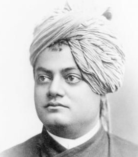

<!DOCTYPE html>
<html lang="en">
<head>
    <meta charset="UTF-8">
    <meta name="viewport" content="width=device-width, initial-scale=1.0">
    <title>Project</title>
    <link rel="stylesheet" href="project.css">
</head>
<body>
    
</body>
</html>
<header class="header">
    <h1 class="title">Swami Vivekananda</h1>
    <p class="description">1863-</p>
  </header>
  <section class="tribute">
    <blockquote>
       " You cannot believe in God until you believe in yourself." 
    </blockquote>
    
  
  <section class="bio">
    <h2>Biography</h2>
    <p>
        Vivekananda was born as Narendranath Datta (name shortened to Narendra or Naren) in a Bengali family in his ancestral home at 3 Gourmohan Mukherjee Street in Calcutta, the capital of British India, on 12 January 1863 during the Makar Sankranti festival. He belonged to a traditional family and was one of nine siblings.
    </p>
    <hr />
  </section>